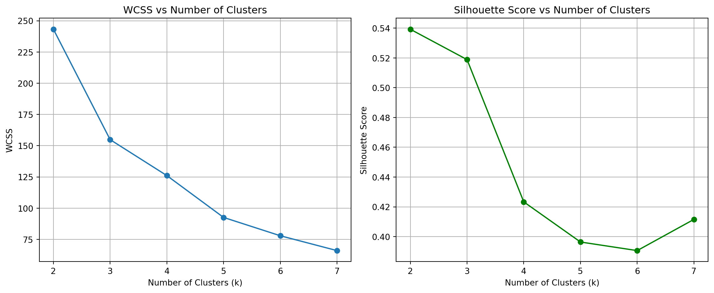
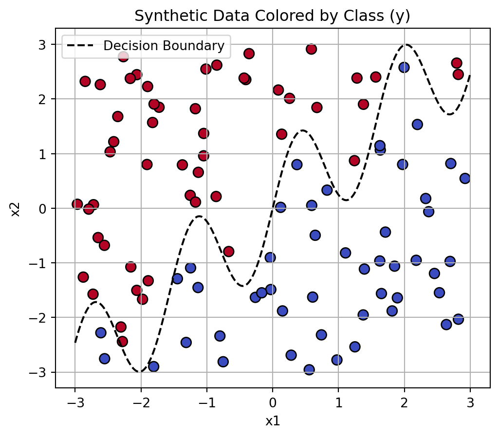
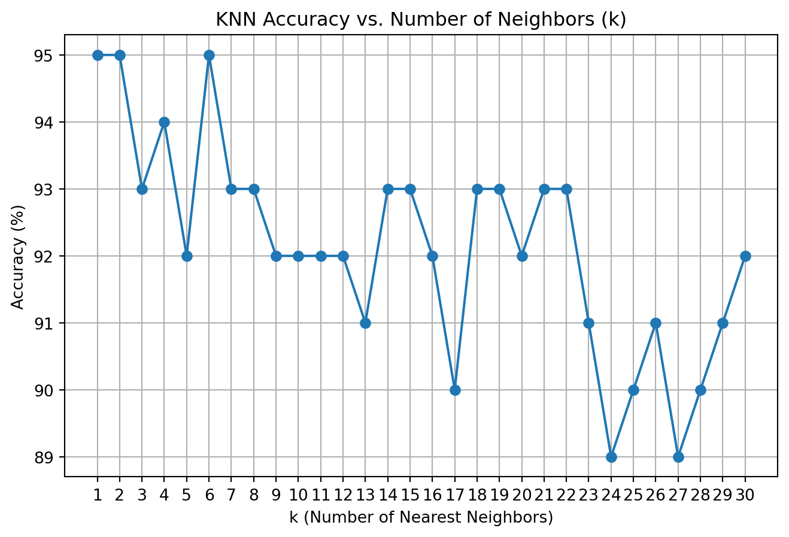

Exploring Unsupervised and Supervised Learning: K-Means Clustering and K-Nearest Neighbors
Author
Xingyu Kuang
Published
June 11, 2025
1a. K-Means
Load and Prepare Data
import pandas as pdimport numpy as npfrom sklearn.preprocessing import StandardScalerimport matplotlib.pyplot as pltdf = pd.read_csv('/Users/1v0/Desktop/kxymkt495/quarto_website/blog/hw4/palmer_penguins.csv')df.head()
This section loads the Palmer Penguins dataset and prepares it for clustering. It selects the relevant numerical features—bill length and flipper length—and removes rows with missing values. These features are then standardized using “StandardScaler” to ensure they are on the same scale, which is important for distance-based algorithms like K-Means. The cleaned and scaled data is stored as a NumPy array (“X_array”) for use in the clustering algorithm.
Custom K-Means Implementation
This section defines and runs a custom implementation of the K-Means algorithm. The algorithm includes manual initialization of centroids, iterative assignment of points to the nearest cluster, centroid updates, and convergence checking.
This part generates an animated visualization of the clustering process. Each iteration is saved as a frame, which is then compiled into a smooth animated GIF using imageio. The animation clearly shows how the centroids move and how data points shift between clusters over time, making the convergence of the algorithm visually intuitive.
The results of the custom K-Means implementation closely align with those produced by Python’s built-in KMeans function.
By standardizing the input features—bill length and flipper length from the Palmer Penguins dataset—and visualizing the iterative centroid updates, the custom algorithm effectively demonstrates the core mechanics of K-Means clustering. While the built-in function benefits from advanced features such as KMeans++ initialization and optimized convergence criteria, the custom implementation achieves comparable cluster separation and centroid placement using a straightforward approach.
The visual comparisons confirm that both methods converge to similar solutions, validating the accuracy of the custom algorithm and providing a clear, step-by-step illustration of how K-Means functions in practice. This comparison highlights the trade-off between educational transparency and computational efficiency.
Cluster Evaluation: WCSS and Silhouette Score
This section evaluates clustering quality by computing two key metrics: Within-Cluster Sum of Squares (WCSS) and Silhouette Score for a range of cluster counts \(K = 2\) to \(7\).
The custom calculate_wcss function manually sums the squared distances between each point and its assigned cluster centroid. For each value of \(K\), the custom K-Means algorithm is run, and both WCSS and silhouette score are calculated and stored.
These metrics help assess the optimal number of clusters by measuring intra-cluster compactness and inter-cluster separation, which will be visualized in the next step.
from sklearn.metrics import silhouette_score# Function to calculate WCSSdef calculate_wcss(X, labels, centroids): wcss =0for i inrange(len(centroids)): cluster_points = X[labels == i] wcss += ((cluster_points - centroids[i])**2).sum()return wcss# Evaluate for k = 2 to 7k_values =list(range(2, 8))wcss_scores = []silhouette_scores = []for k in k_values: labels, centroids, _ = kmeans(X_array, k) wcss = calculate_wcss(X_array, labels, centroids) sil_score = silhouette_score(X_array, labels) wcss_scores.append(wcss) silhouette_scores.append(sil_score)
Plot Metrics for Cluster Evaluation
plt.figure(figsize=(12, 5))plt.subplot(1, 2, 1)plt.plot(k_values, wcss_scores, marker='o')plt.title("WCSS vs Number of Clusters")plt.xlabel("Number of Clusters (k)")plt.ylabel("WCSS")plt.grid(True)plt.subplot(1, 2, 2)plt.plot(k_values, silhouette_scores, marker='o', color='green')plt.title("Silhouette Score vs Number of Clusters")plt.xlabel("Number of Clusters (k)")plt.ylabel("Silhouette Score")plt.grid(True)plt.tight_layout()plt.show()

Based on the evaluation metrics, the optimal number of clusters appears to be three. The within-cluster sum of squares (WCSS) plot displays a clear “elbow” at \(K = 3\), indicating that adding more clusters beyond this point yields only marginal improvement in reducing intra-cluster variance.
Similarly, the silhouette score, which measures how well-separated and cohesive the clusters are, reaches its highest value at \(K = 3\) and declines with larger values of \(K\). The consistency between these two independent metrics strongly supports the conclusion that three clusters provide the most meaningful and well-defined grouping of the penguins based on their bill length and flipper length.
2a. K Nearest Neighbors
Generate Synthetic Data for K-Nearest Neighbors
This section generates a synthetic dataset with two features, x1 and x2, and a binary target y based on whether x2 lies above a nonlinear boundary defined by sin(4 * x1) + x1. The resulting data is stored in a DataFrame and is designed for use with K-Nearest Neighbors classification.
import numpy as npimport pandas as pd# Set seednp.random.seed(42)# Generate datan =100x1 = np.random.uniform(-3, 3, n)x2 = np.random.uniform(-3, 3, n)x = np.column_stack((x1, x2)) # Equivalent to cbind in R# Define wiggly boundaryboundary = np.sin(4* x1) + x1# Create binary outcomey = (x2 > boundary).astype(int) # Same as ifelse and converting to factor# Combine into a DataFramedat = pd.DataFrame({'x1': x1, 'x2': x2, 'y': y})
Visualize Synthetic Classification Data
This section creates a scatter plot of the synthetic dataset, with x1 on the horizontal axis and x2 on the vertical axis. Data points are colored by their binary class label y, and a dashed curve shows the nonlinear decision boundary used to separate the classes.
import matplotlib.pyplot as pltimport numpy as np# Plot the dataplt.figure(figsize=(6, 5))plt.scatter(dat['x1'], dat['x2'], c=dat['y'], cmap='coolwarm', edgecolor='k', s=60)plt.xlabel('x1')plt.ylabel('x2')plt.title('Synthetic Data Colored by Class (y)')x1_line = np.linspace(-3, 3, 300)boundary_line = np.sin(4* x1_line) + x1_lineplt.plot(x1_line, boundary_line, 'k--', label='Decision Boundary')plt.legend()plt.grid(True)plt.show()

Generate Test Dataset for Model Evaluation
This section creates a new synthetic test dataset with 100 points using the same logic as the training data but with a different random seed to ensure variability. The test set maintains the same wiggly decision boundary and structure, making it suitable for evaluating the performance of classification models like KNN.
Implement KNN from Scratch and Validate with scikit-learn
from collections import Counterdef euclidean_distance(p1, p2):return np.sqrt(np.sum((p1 - p2)**2))def knn_predict(X_train, y_train, X_test, k=5): preds = []for x in X_test:# Compute distances to all training points distances = [euclidean_distance(x, x_train) for x_train in X_train]# Get the indices of the k nearest neighbors k_indices = np.argsort(distances)[:k]# Get their labels k_labels = y_train[k_indices]# Majority vote most_common = Counter(k_labels).most_common(1)[0][0] preds.append(most_common)return np.array(preds)
This section compares the accuracy of the custom KNN implementation with scikit-learn’s built-in KNeighborsClassifier using the same test dataset. Both methods achieved an accuracy of 0.92, confirming that the hand-coded algorithm correctly replicates the behavior of the standard KNN classifier.
Determine Optimal k for KNN Classification
This section runs the custom KNN algorithm for values of ( k ) from 1 to 30 and records the classification accuracy on the test dataset. The results are plotted to visualize how accuracy changes with different ( k ) values, allowing us to identify the optimal ( k ) as the one that yields the highest accuracy.
k_values =range(1, 31)accuracies = []for k in k_values: y_pred = knn_predict(X_train, y_train, X_test, k=k) acc = accuracy_score(y_test, y_pred) accuracies.append(acc *100) # convert to percentage
import matplotlib.pyplot as pltplt.figure(figsize=(8, 5))plt.plot(k_values, accuracies, marker='o', linestyle='-')plt.title('KNN Accuracy vs. Number of Neighbors (k)')plt.xlabel('k (Number of Nearest Neighbors)')plt.ylabel('Accuracy (%)')plt.xticks(range(1, 31))plt.grid(True)plt.show()

The plot of KNN accuracy versus the number of neighbors shows that the highest classification accuracy of 95% occurs at k = 1, 2, and 6. Accuracy remains relatively stable between 92% and 93% for a wide range of k values, but begins to decline more noticeably after k = 23, reaching a low of 89% at k = 24. These results suggest that the model performs best with a small number of neighbors. Among the top-performing values, k = 6 may be considered the optimal choice, as it provides high accuracy while being slightly more robust to noise than k = 1.